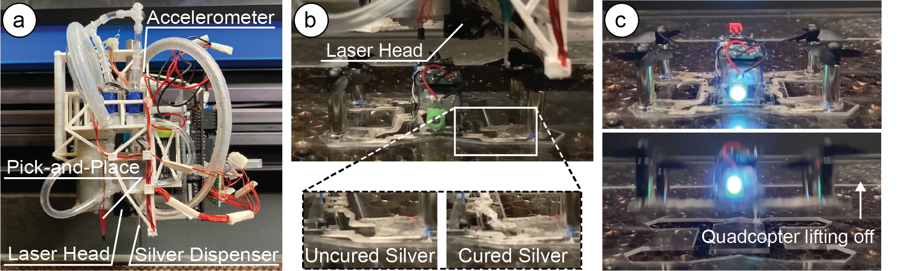

Publication
Martin Nisser, Christina Chen Liao, Yuchen Chai, Aradhana Adhikari, Steve Hodges, Stefanie Mueller.
LaserFactory: An Electromechanical Assembly and Fabrication Platform Integrated with a Laser Cutter to make Functional Devices and Robots
In Proceedings of
CHI ’21.
DOI
PDF
Video
Press video
Conference Talk
Slides
Press


- BBC News
- MIT News
- Yahoo! News
- IEEE Spectrum
- Venture Beat
- Techcrunch
- Engadget
- Hackaday
- Hackster.io
- 3Dprint.com
- Designboom
- Adafruit blog
LaserFactory:
An Electromechanical Assembly and Fabrication Platform
Integrated with a Laser Cutter
to make Functional Devices and Robots.

Figure 1. LaserFactory is an integrated fabrication process that creates fully functional devices. (a) Our hardware add-on to an existing laser cutter consists of a silver dispenser and pick-and-place mechanism and allows the machine to not only cut geometry, but also create circuit traces and assemble electronic components. Our accelerometer-based motion classifier enables the add-on to interface with the laser cutter without the need to change the underlying firmware. (b) To cure the deposited silver traces, we developed a laser soldering method that uses the heat of the defocused laser to make the traces conductive. (c) After laser soldering, the fabricated device is fully functional.
LaserFactory is an integrated fabrication process that augments a commercially available fabrication machine to support the manufacture of fully functioning devices without human intervention. In addition to creating 2D and 3D mechanical structures, LaserFactory creates conductive circuit traces with arbitrary geometries, picks-and-places electronic and electromechanical components, and solders them in place. To enable this functionality, we make four contributions. First, we build a hardware add-on to the laser cutter head that can deposit silver circuit traces and assemble components. Second, we develop a new method to cure dispensed silver using a CO2 laser. Third, we build a motion-based signaling method that allows our system to be readily integrated with commercial laser cutters. Finally, we provide a design and visualization tool for making functional devices with LaserFactory. Having described the LaserFactory system, we demonstrate how it is used to fabricate devices such as a fully functioning quadcopter and a sensor-equipped wristband. Our evaluation shows that LaserFactory can assemble a variety of differently sized components (up to 65g), that these can be connected by narrow traces (down to 0.75mm) that become highly conductive after laser soldering (3.2 Ohm/m), and that our acceleration-based sensing scheme works reliably (to 99.5% accuracy).
Introduction
To fabricate a fully functional device—a 3D structure with integrated electronics and actuators—requires three steps; (1) fabricating the device geometry, (2) creating conductive circuit traces, and (3) populating the structure with electronic components. Researchers have in recent decades developed numerous personal fabrication methods that democratize the creation of such functional devices. These methods focus on extending the abilities of existing fabrication machines designed to create geometry to also permit creating conductive traces, for example by generating hollow internal pipes for 3D prints that can be filled with conductive material [20], or using laser cutters to selectively ablate conductive films that can be populated with components [5]. However as yet, personal fabrication machines do not have the ability to integrate all three steps,and instead rely on human intervention to complete the fabrication procedure. As such, the fabrication of functional devices continues to demand engineering expertise, for example, to etch PCBs or solder components. In addition, repeatability and precision in the construction is compromised, as techniques based on manual intervention impede the ability for engineered devices to be made to specification.
In this paper, we build upon the above systems by proposing a fabrication machine that creates device geometry, adds circuit traces,and then incorporates electronic components in an automated way. With such a machine, users only need to load components into a storage area at the beginning of the fabrication process and execute the fabrication file in order to create a fully functional device. Since many devices can be created from circuits assembled from a subset of basic electronic parts such as transistors, resistors and capacitors, loading a set of these allows users to download and print a variety of different circuits such as H-bridges and op-amps in order to build devices capable of more complex tasks such as motor driving, display rendering and signal conditioning.
There are two possible pathways to create a fabrication platform that can fabricate geometry, circuit traces, and assemble electronic components: either augmenting an existing fabrication device with a custom hardware add-on or building a new fabrication device from the ground up. The benefit of augmenting an existing fabrication device is that existing infrastructure can be leveraged and thus the engineering effort required to create the functionality can be potentially reduced. In addition, the new fabrication capabilities can be made available to a wide range of users who already own such devices and are familiar with them. However, augmenting existing devices comes with its own challenges since the proprietary software running commercial fabrication devices typically does not allow for modifications, which are necessary to instruct a custom hardware add-on to perform its function. To solve this issue, we developed a technique that allows a hardware add-onto communicate with the commercial fabrication device without the need to change the underlying code. The key idea is to embed signals into the fabrication file that result in specific movements of the fabrication head, which can be sensed with a motion-sensor (accelerometer) attached to the head (Figure 1a). Such signals can inform the hardware add-on about which parts of the fabrication file the fabrication head is currently executing and thus instruct the hardware add-on to perform its function at the right time.
While the motion-based signaling technique for augmenting existing fabrication devices works for different types of fabrication machines granted they use a fabrication head on a motion platform and allow custom motion lines to be written to the fabrication file, our platform centers on a commercial laser cutter. We chose a laser cutter as the fabrication platform due to its speed of operation and thus quick turn-around time for prototyping. To augment the laser cutter with the ability to create circuit traces and assemble electronic components, we developed a custom hardware add-on consisting of a silver dispenser and a pick-and-place mechanism that is mounted onto the existing laser cutter head (Figure 1a). When the embedded motion lines in the fabrication file indicate that a circuit trace needs to be fabricated, the silver dispenser starts laying down silver while the laser’s motion carriage continues its movement along the path encoded in the design. Similarly, when the embedded motion lines in the fabrication file indicate that a component needs to picked and placed, a pump connected to the pick-and-place mechanism creates negative pressure for picking up the component.
Since the silver is not yet conductive after it has been dispensed, we developed a technique that uses the heat of the laser for thermal curing of the dispensed silver (Figure 1b). This process is also used to rigidly connect the electronic components to the circuit traces, resulting in the final assembly of the functional device. In contrast to methods that rely on carbon-based conductors and 3D printed filament (Capricate [22]), dispensing and curing the silver creates highly conductive circuit traces. In addition, the laser soldering step also removes the need for a manual curing procedure as was needed in prior work (Valentine et al. [29]). Lastly, in contrast to conductive pastes used in 3D printing-based systems such as Voxel8[31] that cure uniformly in a specified time and therefore precludes local control, laser soldering selectively cures silver paste when required once components are placed. Thus laser soldering does not rely on paste properties that must be synthesized to trade off slow curing (to allow placing components while paste remains uncured) against fast curing (to expedite fabrication).
To support the design of fully functional devices that can be fabricated on our augmented fabrication machine, we also provide a software toolkit that allows users to design devices in a 2D editor by concurrently creating both their geometry and electronic layout. A custom visualization tool then provides a 3D rendering of the resulting geometry and displays the order of fabrication steps, which users can use to validate the design before making it. On export, the software then translates the user’s custom design into machine instructions embedded in a single fabrication file (.pdf) that can be fabricated using the standard laser cutter software to make the functional device in one go (Figure 1c).
In summary, this paper makes the following contributions:
- A hardware add-on consisting of a silver dispenser and a pick-and-place mechanism to augment an existing laser cutter’s functionality with the ability to create circuit traces and place components.
- Laser soldering, a technique for curing dispensed silver traces using the heat of the existing CO2 laser to create highly conductive circuit traces.
- A motion-based signaling technique for augmenting an existing fabrication platform without the need to interface with its underlying software.
- A software toolkit consisting of three elements: a tool that supports the concurrent design of device geometry, circuit traces and electronic component layouts; a tool that visualizes the resulting 3D geometry and steps of the fabrication process; and a translation pipeline that converts the design into machine instructions for the fabrication device and hardware add-on.
 Figure 5. Adding lines to the design file to create additional carriage motion for pick-and-place operations, silver dispensing, and soldering. Lines are offset to compensate for each add-on part's position with respect to the laser head.
On the other hand, an accelerometer affixed to the laser head measures only its inertial motion in terms of acceleration, which makes it possible to recreate on other platforms. By appending a unique line pattern to the beginning and end of paths in the fabrication file, we elicit a specific motion from the laser head, which the onboard accelerometer interprets in order to start or stop a fabrication procedure (silver deposition or pick-and-place).
Motion Pattern Shape: To select a motion pattern for our signal, we investigated the motion of different shapes. In particular, we considered the motion of straight lines, squares and circles in order to test independent, sequential, and simultaneous motions in the X-Y plane, respectively. While all candidates yielded a uniquely classifiable signal, we found that squares and circles were unsuitable as performing their motions may cause extrusion of silver outside of a trace or collision with other components. A one-dimensional line that programmatically tracks backward along a previously deposited trace, in contrast, provides a trajectory that keeps the tip and any dispensed silver above traces.
Duration of Line Pattern: The motion pattern's duration, and therefore physical length, must be small enough to be quickly evaluated by the classifier to allow rapid transmission of fabrication instructions yet long enough for the digital sampling to produce sufficiently many data points for the classifier. We tested the execution of straight lines of lengths between 0.5mm - 6mm in 0.5mm increments, measuring the duration of each. For our processor's maximum sampling speed of 300 Hz, 3mm lines constituted the fastest signal (150ms) that had a sufficient number of data points (45 samples) to encode a uniquely identifiable signal. By accelerating along the trace for 3mm, then decelerating to stop, the signal elicits two consecutive equal but opposite spikes on the accelerometer. This creates a unique signal, as no other maneuver requires re-tracing the exact same path, that can be reliably classified using the accelerometer (Figure 6).
% (Figure 6).
One-time signal calibration and Real-Time Classification
To build the classifier, we perform a one-time calibration of the 3mm line signal described above. We perform this calibration by executing the pattern and measuring the corresponding linear accelerations from the accelerometer in the X-Y plane. We sample the pattern at 300 Hz and low-pass filter it using a 24-point averaging filter to remove noise to construct the signal template.
Figure 6. Filtered accelerometer data during execution of the embedded pattern. When the pattern is executed, the (blue) acceleration produces oppositely signed spikes in rapid succession. (a,d) This characterized template causes the (orange) error signal to drop below the (green) threshold which flips the control signal to start/stop a command; here, starting/stopping the silver extrusion. (b) Periods of constant velocity are marked by accelerations around 0; (c) volatile maneuvers such as moving between contiguous traces causes large errors and thus can be differentiated from actual motion-signal instructions embedded in the fabrication file.
To choose the error signal threshold to identify a signal, we built a dataset of true positives by sampling the signal pattern 100 times, recording the maximum negative error produced by the matched filter for each. Equivalently, we built a dataset of true negatives, compiling a further 100 measurements taken during manoeuvres not associated with a signal. Modeling each as a normal distribution N (μ,σ2), we found the mean and standard deviation for the true positives (X) and true negatives (Z) were X~N(-0.311,0.002) and Z~N(0.057,0.008) respectively and choose our threshold at the intersection of these curves (-0.18) in order to minimize misfirings (false positives and negatives).
After the one-time calibration, our add-on is ready for real-time detection of the motion signals embedded in the design file. For the real-time detection, we low-pass filter the raw acceleration data using a 24-point averaging filter and save it into a 45-point circular buffer. We then build a matched filter by evaluating this buffer against the signal template using the L2 norm at 300 Hz. This produces an error signal of the low-pass filtered data that our detection algorithm normalizes around 0. We then continuously evaluate the output of the matched filter and signal an instruction to the silver extruder or pick-and-place mechanism when the error signal surpasses a characterized threshold.
Technical Evaluation of the Motion-Based Classifier
We evaluate both how reliable our motion-based classifier can detect the motion-signals and if the motion-based classification approach transfers across different fabrication machines.
Performance: First, we evaluated the accuracy with which our motion-based classifier detects signals embedded in the fabrication file. To determine this, we mounted the add-on to the laser head, then started fabrication of a design consisting of 5 horizontal lines and 5 vertical lines, each 50mm in length, totalling a combined 10 start signals and 10 stop signals (20 signals in total). For each signal, we noted whether detection was successful, and after all lines were executed, we dismounted the add-on. We repeated this procedure 10 times, for a total of 200 signals. One signal was undetected, yielding a classification accuracy of 99.5\% for this test, with 0 false positives, and 1 false negative. We then executed fabrication of our three application examples; the quadcopter, wristband, and PCB, five times each. These consist of a total of 465 signals, including 305 silver deposition sequences between 7mm and 90mm in length, and 115 pick-and-place sequences between 140 and 190mm in length. No signal misfirings were registered during these trials. By integrating the cumulative distribution functions of our normal distributions from Section 6 to evaluate the Receiver Operating Characteristic (ROC) curve for our characterized classification threshold, we find that our model predicts a false positive rate of approximately 0.2\% and false negative rate of 0.1\%, which agrees with these results. This result shows that our procedure produces a reliable classification due to our ability to freely design a unique signal for detection. However, in case the detection misfires, LaserFactory currently has no way to detect it. We plan to explore such detection as part of future work by embedding additional lines that function as interrupts.
Transferability: We designed the hardware add-on to be fully self-contained and the fabrication signaling to be motion-based in order to demonstrate an add-on design that can be used to augment different fabrication machines. To test if our add-on can indeed work on different fabrication machines, we tested our approach on the 3D printer Ultimaker 3. To conduct this test, we wrote a custom G-code script that mimicks silver deposition by executing first a vertical then a horizontal 30mm line, with our 3mm signal pattern appended at every line end. We use the G0 command to execute the pattern, representing a co-ordinated movement at rapid rate without material extrusion with feed rate set to F15000. We deployed this file 10 times on the Ultimaker 3 and achieved a 100\% signal classification accuracy. While additional tests on other fabrication devices are needed before full transferability can be claimed, the results show that motion-based signaling has the potential to work across different fabrication devices. Before motion-based signaling can be used on a new machine, the motion-signal must first be characterized via the one-time calibration and the add-on's physical clips need to be adjusted to the differently shaped tool head.
Designing a Device for Use with LaserFactory
To support the creation of devices with LaserFactory, we provide the end-to-end fabrication pipeline shown in Figure 7. It consists of a design and visualization tool as well as a post-processing script that converts the design file into a set of machine instructions for fabricating the device with LaserFactory on the augmented laser cutter. The design tool lets users create 2D designs using drawing tools for the geometry (‘cut’, ‘fold’), the circuit traces (‘wire’), and for placing electronic components (‘place part’). This allows users to concurrently design the geometry and the electronic circuit. The accompanying visualization tool renders both the final 2D or 3D design and allows users to animate each step of the fabrication process. This assists users who may find it difficult to visualize the abstract 2D drawing. In addition, it allows users to inspect the order of each step in the fabrication process. On export, our post-processing script automatically translates the design file into machine instructions. Users do not have to add any explicit instructions for the add-on.
Figure 5. Adding lines to the design file to create additional carriage motion for pick-and-place operations, silver dispensing, and soldering. Lines are offset to compensate for each add-on part's position with respect to the laser head.
On the other hand, an accelerometer affixed to the laser head measures only its inertial motion in terms of acceleration, which makes it possible to recreate on other platforms. By appending a unique line pattern to the beginning and end of paths in the fabrication file, we elicit a specific motion from the laser head, which the onboard accelerometer interprets in order to start or stop a fabrication procedure (silver deposition or pick-and-place).
Motion Pattern Shape: To select a motion pattern for our signal, we investigated the motion of different shapes. In particular, we considered the motion of straight lines, squares and circles in order to test independent, sequential, and simultaneous motions in the X-Y plane, respectively. While all candidates yielded a uniquely classifiable signal, we found that squares and circles were unsuitable as performing their motions may cause extrusion of silver outside of a trace or collision with other components. A one-dimensional line that programmatically tracks backward along a previously deposited trace, in contrast, provides a trajectory that keeps the tip and any dispensed silver above traces.
Duration of Line Pattern: The motion pattern's duration, and therefore physical length, must be small enough to be quickly evaluated by the classifier to allow rapid transmission of fabrication instructions yet long enough for the digital sampling to produce sufficiently many data points for the classifier. We tested the execution of straight lines of lengths between 0.5mm - 6mm in 0.5mm increments, measuring the duration of each. For our processor's maximum sampling speed of 300 Hz, 3mm lines constituted the fastest signal (150ms) that had a sufficient number of data points (45 samples) to encode a uniquely identifiable signal. By accelerating along the trace for 3mm, then decelerating to stop, the signal elicits two consecutive equal but opposite spikes on the accelerometer. This creates a unique signal, as no other maneuver requires re-tracing the exact same path, that can be reliably classified using the accelerometer (Figure 6).
% (Figure 6).
One-time signal calibration and Real-Time Classification
To build the classifier, we perform a one-time calibration of the 3mm line signal described above. We perform this calibration by executing the pattern and measuring the corresponding linear accelerations from the accelerometer in the X-Y plane. We sample the pattern at 300 Hz and low-pass filter it using a 24-point averaging filter to remove noise to construct the signal template.
Figure 6. Filtered accelerometer data during execution of the embedded pattern. When the pattern is executed, the (blue) acceleration produces oppositely signed spikes in rapid succession. (a,d) This characterized template causes the (orange) error signal to drop below the (green) threshold which flips the control signal to start/stop a command; here, starting/stopping the silver extrusion. (b) Periods of constant velocity are marked by accelerations around 0; (c) volatile maneuvers such as moving between contiguous traces causes large errors and thus can be differentiated from actual motion-signal instructions embedded in the fabrication file.
To choose the error signal threshold to identify a signal, we built a dataset of true positives by sampling the signal pattern 100 times, recording the maximum negative error produced by the matched filter for each. Equivalently, we built a dataset of true negatives, compiling a further 100 measurements taken during manoeuvres not associated with a signal. Modeling each as a normal distribution N (μ,σ2), we found the mean and standard deviation for the true positives (X) and true negatives (Z) were X~N(-0.311,0.002) and Z~N(0.057,0.008) respectively and choose our threshold at the intersection of these curves (-0.18) in order to minimize misfirings (false positives and negatives).
After the one-time calibration, our add-on is ready for real-time detection of the motion signals embedded in the design file. For the real-time detection, we low-pass filter the raw acceleration data using a 24-point averaging filter and save it into a 45-point circular buffer. We then build a matched filter by evaluating this buffer against the signal template using the L2 norm at 300 Hz. This produces an error signal of the low-pass filtered data that our detection algorithm normalizes around 0. We then continuously evaluate the output of the matched filter and signal an instruction to the silver extruder or pick-and-place mechanism when the error signal surpasses a characterized threshold.
Technical Evaluation of the Motion-Based Classifier
We evaluate both how reliable our motion-based classifier can detect the motion-signals and if the motion-based classification approach transfers across different fabrication machines.
Performance: First, we evaluated the accuracy with which our motion-based classifier detects signals embedded in the fabrication file. To determine this, we mounted the add-on to the laser head, then started fabrication of a design consisting of 5 horizontal lines and 5 vertical lines, each 50mm in length, totalling a combined 10 start signals and 10 stop signals (20 signals in total). For each signal, we noted whether detection was successful, and after all lines were executed, we dismounted the add-on. We repeated this procedure 10 times, for a total of 200 signals. One signal was undetected, yielding a classification accuracy of 99.5\% for this test, with 0 false positives, and 1 false negative. We then executed fabrication of our three application examples; the quadcopter, wristband, and PCB, five times each. These consist of a total of 465 signals, including 305 silver deposition sequences between 7mm and 90mm in length, and 115 pick-and-place sequences between 140 and 190mm in length. No signal misfirings were registered during these trials. By integrating the cumulative distribution functions of our normal distributions from Section 6 to evaluate the Receiver Operating Characteristic (ROC) curve for our characterized classification threshold, we find that our model predicts a false positive rate of approximately 0.2\% and false negative rate of 0.1\%, which agrees with these results. This result shows that our procedure produces a reliable classification due to our ability to freely design a unique signal for detection. However, in case the detection misfires, LaserFactory currently has no way to detect it. We plan to explore such detection as part of future work by embedding additional lines that function as interrupts.
Transferability: We designed the hardware add-on to be fully self-contained and the fabrication signaling to be motion-based in order to demonstrate an add-on design that can be used to augment different fabrication machines. To test if our add-on can indeed work on different fabrication machines, we tested our approach on the 3D printer Ultimaker 3. To conduct this test, we wrote a custom G-code script that mimicks silver deposition by executing first a vertical then a horizontal 30mm line, with our 3mm signal pattern appended at every line end. We use the G0 command to execute the pattern, representing a co-ordinated movement at rapid rate without material extrusion with feed rate set to F15000. We deployed this file 10 times on the Ultimaker 3 and achieved a 100\% signal classification accuracy. While additional tests on other fabrication devices are needed before full transferability can be claimed, the results show that motion-based signaling has the potential to work across different fabrication devices. Before motion-based signaling can be used on a new machine, the motion-signal must first be characterized via the one-time calibration and the add-on's physical clips need to be adjusted to the differently shaped tool head.
Designing a Device for Use with LaserFactory
To support the creation of devices with LaserFactory, we provide the end-to-end fabrication pipeline shown in Figure 7. It consists of a design and visualization tool as well as a post-processing script that converts the design file into a set of machine instructions for fabricating the device with LaserFactory on the augmented laser cutter. The design tool lets users create 2D designs using drawing tools for the geometry (‘cut’, ‘fold’), the circuit traces (‘wire’), and for placing electronic components (‘place part’). This allows users to concurrently design the geometry and the electronic circuit. The accompanying visualization tool renders both the final 2D or 3D design and allows users to animate each step of the fabrication process. This assists users who may find it difficult to visualize the abstract 2D drawing. In addition, it allows users to inspect the order of each step in the fabrication process. On export, our post-processing script automatically translates the design file into machine instructions. Users do not have to add any explicit instructions for the add-on.
 Figure 7. LaserFactory Pipeline: (a) Design Tool: Users place components, and draw geometry and circuit traces. (b) Visualization Tool: Users can preview the design in 3D and visualize the fabrication steps for debugging the design. (c) Post-Processing: On export, the design file is converted into machine instructions for the augmented laser cutter. (d) Fabrication: The augmented laser cutter then executes the post-processed file, i.e. cuts the geometry, dispenses silver for circuit traces, pick-and-places components, and then cures the silver to make the traces conductive and solders the components. Once fabricated, the device is fully functional.
Design Tool
Our design tool (developed as a plugin to the 2D editor Adobe Illustrator) supports users in placing components, drawing circuit traces and designing the geometry of their devices. Figure 8a shows the toolbar of our design tool, which has the following functionality.
Electronic component library: To facilitate circuit design, users can select electronic components from a library of parts. Common components can be accessed directly from the toolbar and others can be found using the 'find part' button that opens the component library (Figure 8a). After selecting a component, it is loaded as a 2D representation onto the canvas (Figure 8b). Components appear as their physical footprint superimposed with their electronic symbol. Seeing the electronic components allows users to appraise the size of the main geometry in their design and adjust the design as needed.
Wire drawing tool: LaserFactory offers a wire drawing tool (Figure 8b), which is used to connect electronic components with traces. While free-form traces are possible, we enforce the wire tool to snap to 0/90° in order to align signaling motion with trace geometry for cleaner fabrication. Traces can also snap to the electrodes of components on approach to them, ensuring good electrical connections during fabrication. In the drawing, circuit traces are differentiated from other types of lines by color coding them in green (Figure 8g).
Geometry drawing tools: The LaserFactory user interface offers two drawing tools to define the geometry of the object (Figure 8c): the cut drawing tool and the bend drawing tool. In the drawing, cut lines are visualized in red and bend lines are visualized in cyan. For bending, users only have to indicate where to bend, but not in which order, which is taken care of by our post-processing script. For bending, users must use the 'anchor' tool to assign a section as the anchor plane which constrains this section as the one that remains planar in the event of folding.
Export tools: Finally, the interface includes a set of tools for use on completion of the design (Figure 8d). The "estimate time" tool parses the file to estimate the total fabrication time that is then displayed in the view. The 'Preview Part' tool opens the visualization tool, which we describe in more detail in the next section. Finally, the 'create laser cutting file' tool post-processes the design for fabrication and generates the final fabrication file.
Figure 8. Users use the design toolbar to design a device such as a quadcopter. The steps involved (a,e) placing components from a part library, (b,f) routing circuit traces, (c,g) drawing lines for the geometry, here showing cut lines and (d,h) using export tools, here showing rendering the output of the visualization tool.
Visualization Tool
Since the 2D drawing is an abstract representation of the resulting design, we developed a 3D visualization tool (developed as a plugin to the 3D editor Blender) that users can launch at any time in the design process. Figure 9 shows the visualization tool, which has the following functionality.
Rendering the 3D design: The visualization tool shows the design as a solid 3D geometry, including any folded parts. This allows the user to see if the folds are placed correctly and result in the desired 3D geometry. In addition, all electronic component footprints are replaced with their respective 3D models, providing a preview of the final device.
Order of fabrication steps: Besides showing the design as a 3D shape, the visualization tool also contains a video playback that animates each step of the fabrication process. This allow users to double check if the post-processed design file contains the correct fabrication order. For instance, folded geometry must be released with a cut first before any folding can occur, which can be observed in the animation.
Visualizing the movement of the tool head: Finally, the visualization tool also renders the tool used in each fabrication step: the laser during cutting and curing (and any folding), the silver dispenser during trace creation, and the pick-and-place nozzle during component placement. This allows users to assess potential collision in their design, such as unwanted intersections between the laser beam and placed components to prevent damage.
Figure 9. Visualization showing the resulting 3D geometry and order of fabrication steps: (a) cutting, (b) silver deposition, (c) component placement, (d) soldering and deployment.
Post-processing of Design File
When exporting the design file, a number of post-processing steps are applied to the design file to make it work with the LaserFactory add-on. The user’s exported design contains only the cut and bend lines, the circuit traces, and the locations of components on the device. In a first post-processing step, additional motion lines are added for picking-and-placing components and curing the traces. Next, all lines that belong to the silver dispenser and pick-and-place head are offset by each add-on's distance to the laser head. In addition, all curing lines are offset by a small amount to account for the laser beams offset at larger heights. After this, the pre-designed motion pattern that encodes the start/stop signal for the silver dispenser and the pick-and-place mechanism are added to the drawing. Finally, all lines are color-coded to ensure proper fabrication order. All line-manipulations are summarized in Table 1.
Adding lines for soldering and pick-and-place trajectories: The original design file does not contain lines for picking up components from the component storage on the laser cutter's periphery and placing them onto the device geometry. We thus generate additional lines to guide the laser head between the pick-up locations of each component, and the target locations on the device as specified in the design file. To generate the lines, we use a simple path-planning procedure that allows for obstacle-avoidance of all other components on the canvas. While the user only draws circuit traces once, the path of each circuit trace must be tracked twice: once for dispensing the silver with the silver dispenser and once for curing with the defocused laser. We thus create a second copy of the circuit traces to be used for curing. Finally, we append the motion patterns to signal to the silver dispenser and pick-and-place mechanism when to start/stop their operation as explained in section 6.
Offsetting lines in the X-Y plane: As part of the post-processing, we apply offsets in the X-Y plane to the different fabrication steps. First the circuit traces and pick-and-place paths are offset to account for the physical offset between the laser head and the silver dispenser nozzle and the pick-and-place nozzle, respectively. Next, we apply a second round of offsets for curing and folding which involve the defocused laser at different heights. This is done to account for a slight misalignment between our laser and the z-axis, and requires a one-time calibration.
Order of execution: Most laser cutters, including the ULS.PLS.150D used here, order the execution of lines by color and allow assigning each color to a different power/speed/z-axis setting. To enforce the correct ordering of steps in our fabrication pipeline, we assign each step a designated color. Because lines of the same color are by default executed in the order in which they are drawn and written to the design file (.svg), we re-order lines of the same color, for instance, to encode which bend lines should be executed first in the event of serial folds. Our system automatically post-processes the design file with the modifications detailed above, producing a fabrication file ready for the laser cutter.
Loading onto the laser cutter: Following post-processing, users can load the output file into the regular laser cutter software to begin fabrication. Before starting fabrication, the user must also load the corresponding laser setting files (.las) that assigns power, speed, and z-axis settings for each color in the drawing. Settings for the pump and other hardware supporting the LaserFactory add-on’s operation are programmed once onto its microcontroller and then valid independent of the design file. All laser cutter settings and hardware add-on settings are summarized in Table 1. Users place material in the bed, mount the LaserFactory add-on onto the laser head using three 3D printed clips, load components into the storage area, and then execute the job.
Applications
The results from our evaluation indicate that devices created by Laserfactory can be used for applications requiring fine sensing and control, high frequency signals, and actuator driving with minimal loss. We demonstrate several of these capabilities through our example applications: a self-deploying quadcopter, a sensor-equipped wristband, and a printed circuit board (Figure 10).
Figure 10. Functional Devices made with LaserFactory: (a) a quadcopter that can lift of the fabrication platform, (b) a sensor-equipped wristband capable of gesture recognition, and (c) a printed circuit board, specifically an H bridge.
Self-deploying quadcopter
As our first example, we designed and fabricated a quadcopter (Figure 10a) to showcase three of LaserFactory's capabilities. When designing a quadcopter, one primary concern is minimizing its total mass. By using LaserFactory's ability to create geometry and circuit traces in tandem, we were able to reduce the area of the quadcopter platform to only contain material where circuit traces or components need to be placed, minimizing the overall mass. Second, this example illustrates LaserFactory's capability to fabricate devices that require non-trivial electrical currents, which is only practical with low resistance traces, such as those made by LaserFactory. Third, this example illustrates LaserFactory's capability to create devices end-to-end without human intervention; in this case the quadcopter can self-deploy directly from the build plate if needed. The total fabrication time of the quadcopter was 11 minutes. The electronic components placed as part of the fabrication process include the four rotors plus an integrated PCB and battery. Note that unlike regular SMD components that can be used as-is, we harvested these components from an existing quadcopter and therefore had to expose and position the pins by fastening them to acrylic substrates prior to placing them on the LaserFactory component storage area in order to be compatible with our technique.
Personalized devices and wearables
We fabricated a personalized, sensor-equipped wristband (Figure 10b) capable of sensing gestures that can be transmitted to control a mobile phone via bluetooth. It is comprised of a white sheet of acrylic with a personalized cutting pattern and a living hinge, in addition to an Arduino Sense BLE, battery, and passive components. By gesturing in one of four different directions (forward, backward, left, right), a different command is issued, and an LED changes color. The total fabrication time for this device was 9 minutes, after which the wristband can be picked out of the laser cutter and used immediately. This highlight's LaserFactory's ability to rapidly create personalized electronics on-demand. We also created capacitive sensors from traces themselves, showing how simple touch and humidity sensors as well as antennae can be fabricated without the need to procure dedicated external components.
Printed circuit boards
We fabricated an H bridge motor driver as an individual PCB (Figure 10c). H bridges are circuits used to switch the polarity of a load, allowing them to directly drive a DC motor bidirectionally. They are frequently used by hobbyists and electronic novices because microcontrollers, such as the Arduino platform, cannot drive motors directly from their pins. The H bridge takes 12 minutes to fabricate and is made up of 13 components: two PNP transistors, two NPN transistors, four resistors and five female header connectors. These connectors are used to easily mate with the four required control signals and a motor. This application demonstrates LaserFactory's capability to create ICs from basic SMD components, such as transistors and resistors. Since transistors and resistors can be used to create a variety of different ICs with different functionality (e.g., H bridges, Op Amps), this example showcases that LaserFactory can create a diverse set of devices even when only basic components are loaded into the component storage area. Thus, rather than ordering the ICs, LaserFactory can make them on demand. Moreover, as a single fabrication file encodes all fabrication instructions, such files can be easily shared and downloaded in order to fabricate PCBs that other experts have designed.
Limitations and Future Work
We next discuss design decisions made while developing the LaserFactory system and lay out future opportunities for improvements.
Transferability between different laser cutters: Just as power, speed and height settings must be characterized for cutting the same material on two different laser cutters, the same is true for the settings of the LaserFactory add-on. The laser cutter settings in Table~\ref{tab:laser-settings}, 3D printed clips for mounting the add-on, and the motion signal used are all calibrated for use on our specific laser cutter machine, i.e. the ULS.PLS.150D system. Thus, the settings need to be re-calibrated to work with the specific laser power, laser head shape, and carriage motion that is expected to differ between machines. Underlying this is the requirement for the firmware to allow reading an SVG/PDF file line by line, and to not automatically smooth all accelerations. For laser soldering, we tested and confirmed its compatibility with a range of power, speed and height permutations. This suggests that laser cutters within a range of power ratings could potentially be compatible for use with laser soldering as long as they have an adjustable platform height. While outside the scope of our work, it would be an important future work to validate this cross-device functioning.
Unidirectional communication: The platform agnosticism gained by leveraging uni-directional communications comes with the trade-off that LaserFactory is not set up to transmit instructions back to the laser cutter firmware. In its current state, this prevents LaserFactory from being able to communicate interrupts to the laser cutter software to allow for potential interventions. Such interrupts would be useful to allow aborting fabrication in cases of malfunction or an unexpected contact detected by the pick-and-place sensor. One method of enabling bidirectional communication would be to fit the hardware add-on with an onboard transceiver, however interfacing it with laser cutter firmware would necessarily be platform specific.
Component Loading: In the current version of LaserFactory, we use a pre-loaded component storage inside the laser cutter that users can re-stock as needed. The storage consists of engraved footprints of electronic components that help the user align them correctly during loading. LaserFactory uses these positions to compute paths for the pick and place operations. The current system thus relies on foreknowledge about what components will be used. For future work, we plan to investigate how we can enable pre-stocking of a larger number of components and how to feed in components on-demand to accommodate real-time design decisions. In addition, LaserFactory's hardware currently does not support electronic component rotation. Thus, the orientation of pre-stocked components must match that of their virtual counterparts. For future work, we plan to add a rotation axis to the pick-and-place tool to extend the degrees of freedom available to designers. We also plan to investigate stocking material sheet in the component storage area, which can be cut and stacked to form multimaterial structures.
On-Demand Device Programming: The microcontrollers that are picked-and-placed as part of the fabrication process are currently manually pre-programmed ahead of time, requiring foreknowledge of the device in which they will be used and its context. For future work, we plan to explore methods for flashing programs on-demand to accommodate more versatile deployment; a promising candidate for this could be programming via infrared receivers (Kilobots [10]).
Conclusion
In this paper, we presented LaserFactory, an integrated fabrication platform that can rapidly create the geometry of a device, create its circuit traces and assemble components without manual intervention. We demonstrated how we can augment an existing laser cutter with a hardware add-on without interfacing with its underlying firmware by using a motion-based signaling technique that can inform the add-on when to start and stop its operation. We illustrated the two main features of our hardware add-on, a silver dispenser used for circuit trace creation and a pick-and-place mechanism used for assembling electronic components, and showed that the add-on can create high-resolution traces of high conductivity and assemble a range of different electronic components. We then showcased laser soldering, a technique that uses a $\mathrm{CO_2}$ laser to cure dispensed silver paste and discussed which laser cutter settings are most suitable to cure the traces. Finally, we showed our end-to-end design and fabrication pipeline consisting of a design tool, a visualization tool, and a post-processing script that transforms the design file into machine instructions for LaserFactory. We also showed example applications that included a quadcopter with actuators, a sensor-enhanced wristband, and a PCB assembled from basic transistors and resistors. For future work, we plan to evaluate the transferability of our add-on to different laser cutting machines, investigate how to improve component loading, and evaluate different methods to deploy control logic onto a fabricated device. Researchers have in recent decades made significant progress toward the long-term vision of being able to download a device file and have it fabricated at the push of a button. While laypeople can today do so for passive, primarily decorative objects via commercially available laser cutters and 3D printers, we hope that the fabrication of fully functional, electromechanical devices demonstrated in this paper will help spur further research toward that shared vision.
Acknowledgements
This material is based upon work supported by the National Science Foundation under Grant No. 1716413. The work was also supported by a Microsoft Research Faculty Fellowship and The Royal Swedish Academy of Sciences.
Figure 7. LaserFactory Pipeline: (a) Design Tool: Users place components, and draw geometry and circuit traces. (b) Visualization Tool: Users can preview the design in 3D and visualize the fabrication steps for debugging the design. (c) Post-Processing: On export, the design file is converted into machine instructions for the augmented laser cutter. (d) Fabrication: The augmented laser cutter then executes the post-processed file, i.e. cuts the geometry, dispenses silver for circuit traces, pick-and-places components, and then cures the silver to make the traces conductive and solders the components. Once fabricated, the device is fully functional.
Design Tool
Our design tool (developed as a plugin to the 2D editor Adobe Illustrator) supports users in placing components, drawing circuit traces and designing the geometry of their devices. Figure 8a shows the toolbar of our design tool, which has the following functionality.
Electronic component library: To facilitate circuit design, users can select electronic components from a library of parts. Common components can be accessed directly from the toolbar and others can be found using the 'find part' button that opens the component library (Figure 8a). After selecting a component, it is loaded as a 2D representation onto the canvas (Figure 8b). Components appear as their physical footprint superimposed with their electronic symbol. Seeing the electronic components allows users to appraise the size of the main geometry in their design and adjust the design as needed.
Wire drawing tool: LaserFactory offers a wire drawing tool (Figure 8b), which is used to connect electronic components with traces. While free-form traces are possible, we enforce the wire tool to snap to 0/90° in order to align signaling motion with trace geometry for cleaner fabrication. Traces can also snap to the electrodes of components on approach to them, ensuring good electrical connections during fabrication. In the drawing, circuit traces are differentiated from other types of lines by color coding them in green (Figure 8g).
Geometry drawing tools: The LaserFactory user interface offers two drawing tools to define the geometry of the object (Figure 8c): the cut drawing tool and the bend drawing tool. In the drawing, cut lines are visualized in red and bend lines are visualized in cyan. For bending, users only have to indicate where to bend, but not in which order, which is taken care of by our post-processing script. For bending, users must use the 'anchor' tool to assign a section as the anchor plane which constrains this section as the one that remains planar in the event of folding.
Export tools: Finally, the interface includes a set of tools for use on completion of the design (Figure 8d). The "estimate time" tool parses the file to estimate the total fabrication time that is then displayed in the view. The 'Preview Part' tool opens the visualization tool, which we describe in more detail in the next section. Finally, the 'create laser cutting file' tool post-processes the design for fabrication and generates the final fabrication file.
Figure 8. Users use the design toolbar to design a device such as a quadcopter. The steps involved (a,e) placing components from a part library, (b,f) routing circuit traces, (c,g) drawing lines for the geometry, here showing cut lines and (d,h) using export tools, here showing rendering the output of the visualization tool.
Visualization Tool
Since the 2D drawing is an abstract representation of the resulting design, we developed a 3D visualization tool (developed as a plugin to the 3D editor Blender) that users can launch at any time in the design process. Figure 9 shows the visualization tool, which has the following functionality.
Rendering the 3D design: The visualization tool shows the design as a solid 3D geometry, including any folded parts. This allows the user to see if the folds are placed correctly and result in the desired 3D geometry. In addition, all electronic component footprints are replaced with their respective 3D models, providing a preview of the final device.
Order of fabrication steps: Besides showing the design as a 3D shape, the visualization tool also contains a video playback that animates each step of the fabrication process. This allow users to double check if the post-processed design file contains the correct fabrication order. For instance, folded geometry must be released with a cut first before any folding can occur, which can be observed in the animation.
Visualizing the movement of the tool head: Finally, the visualization tool also renders the tool used in each fabrication step: the laser during cutting and curing (and any folding), the silver dispenser during trace creation, and the pick-and-place nozzle during component placement. This allows users to assess potential collision in their design, such as unwanted intersections between the laser beam and placed components to prevent damage.
Figure 9. Visualization showing the resulting 3D geometry and order of fabrication steps: (a) cutting, (b) silver deposition, (c) component placement, (d) soldering and deployment.
Post-processing of Design File
When exporting the design file, a number of post-processing steps are applied to the design file to make it work with the LaserFactory add-on. The user’s exported design contains only the cut and bend lines, the circuit traces, and the locations of components on the device. In a first post-processing step, additional motion lines are added for picking-and-placing components and curing the traces. Next, all lines that belong to the silver dispenser and pick-and-place head are offset by each add-on's distance to the laser head. In addition, all curing lines are offset by a small amount to account for the laser beams offset at larger heights. After this, the pre-designed motion pattern that encodes the start/stop signal for the silver dispenser and the pick-and-place mechanism are added to the drawing. Finally, all lines are color-coded to ensure proper fabrication order. All line-manipulations are summarized in Table 1.
Adding lines for soldering and pick-and-place trajectories: The original design file does not contain lines for picking up components from the component storage on the laser cutter's periphery and placing them onto the device geometry. We thus generate additional lines to guide the laser head between the pick-up locations of each component, and the target locations on the device as specified in the design file. To generate the lines, we use a simple path-planning procedure that allows for obstacle-avoidance of all other components on the canvas. While the user only draws circuit traces once, the path of each circuit trace must be tracked twice: once for dispensing the silver with the silver dispenser and once for curing with the defocused laser. We thus create a second copy of the circuit traces to be used for curing. Finally, we append the motion patterns to signal to the silver dispenser and pick-and-place mechanism when to start/stop their operation as explained in section 6.
Offsetting lines in the X-Y plane: As part of the post-processing, we apply offsets in the X-Y plane to the different fabrication steps. First the circuit traces and pick-and-place paths are offset to account for the physical offset between the laser head and the silver dispenser nozzle and the pick-and-place nozzle, respectively. Next, we apply a second round of offsets for curing and folding which involve the defocused laser at different heights. This is done to account for a slight misalignment between our laser and the z-axis, and requires a one-time calibration.
Order of execution: Most laser cutters, including the ULS.PLS.150D used here, order the execution of lines by color and allow assigning each color to a different power/speed/z-axis setting. To enforce the correct ordering of steps in our fabrication pipeline, we assign each step a designated color. Because lines of the same color are by default executed in the order in which they are drawn and written to the design file (.svg), we re-order lines of the same color, for instance, to encode which bend lines should be executed first in the event of serial folds. Our system automatically post-processes the design file with the modifications detailed above, producing a fabrication file ready for the laser cutter.
Loading onto the laser cutter: Following post-processing, users can load the output file into the regular laser cutter software to begin fabrication. Before starting fabrication, the user must also load the corresponding laser setting files (.las) that assigns power, speed, and z-axis settings for each color in the drawing. Settings for the pump and other hardware supporting the LaserFactory add-on’s operation are programmed once onto its microcontroller and then valid independent of the design file. All laser cutter settings and hardware add-on settings are summarized in Table 1. Users place material in the bed, mount the LaserFactory add-on onto the laser head using three 3D printed clips, load components into the storage area, and then execute the job.
Applications
The results from our evaluation indicate that devices created by Laserfactory can be used for applications requiring fine sensing and control, high frequency signals, and actuator driving with minimal loss. We demonstrate several of these capabilities through our example applications: a self-deploying quadcopter, a sensor-equipped wristband, and a printed circuit board (Figure 10).
Figure 10. Functional Devices made with LaserFactory: (a) a quadcopter that can lift of the fabrication platform, (b) a sensor-equipped wristband capable of gesture recognition, and (c) a printed circuit board, specifically an H bridge.
Self-deploying quadcopter
As our first example, we designed and fabricated a quadcopter (Figure 10a) to showcase three of LaserFactory's capabilities. When designing a quadcopter, one primary concern is minimizing its total mass. By using LaserFactory's ability to create geometry and circuit traces in tandem, we were able to reduce the area of the quadcopter platform to only contain material where circuit traces or components need to be placed, minimizing the overall mass. Second, this example illustrates LaserFactory's capability to fabricate devices that require non-trivial electrical currents, which is only practical with low resistance traces, such as those made by LaserFactory. Third, this example illustrates LaserFactory's capability to create devices end-to-end without human intervention; in this case the quadcopter can self-deploy directly from the build plate if needed. The total fabrication time of the quadcopter was 11 minutes. The electronic components placed as part of the fabrication process include the four rotors plus an integrated PCB and battery. Note that unlike regular SMD components that can be used as-is, we harvested these components from an existing quadcopter and therefore had to expose and position the pins by fastening them to acrylic substrates prior to placing them on the LaserFactory component storage area in order to be compatible with our technique.
Personalized devices and wearables
We fabricated a personalized, sensor-equipped wristband (Figure 10b) capable of sensing gestures that can be transmitted to control a mobile phone via bluetooth. It is comprised of a white sheet of acrylic with a personalized cutting pattern and a living hinge, in addition to an Arduino Sense BLE, battery, and passive components. By gesturing in one of four different directions (forward, backward, left, right), a different command is issued, and an LED changes color. The total fabrication time for this device was 9 minutes, after which the wristband can be picked out of the laser cutter and used immediately. This highlight's LaserFactory's ability to rapidly create personalized electronics on-demand. We also created capacitive sensors from traces themselves, showing how simple touch and humidity sensors as well as antennae can be fabricated without the need to procure dedicated external components.
Printed circuit boards
We fabricated an H bridge motor driver as an individual PCB (Figure 10c). H bridges are circuits used to switch the polarity of a load, allowing them to directly drive a DC motor bidirectionally. They are frequently used by hobbyists and electronic novices because microcontrollers, such as the Arduino platform, cannot drive motors directly from their pins. The H bridge takes 12 minutes to fabricate and is made up of 13 components: two PNP transistors, two NPN transistors, four resistors and five female header connectors. These connectors are used to easily mate with the four required control signals and a motor. This application demonstrates LaserFactory's capability to create ICs from basic SMD components, such as transistors and resistors. Since transistors and resistors can be used to create a variety of different ICs with different functionality (e.g., H bridges, Op Amps), this example showcases that LaserFactory can create a diverse set of devices even when only basic components are loaded into the component storage area. Thus, rather than ordering the ICs, LaserFactory can make them on demand. Moreover, as a single fabrication file encodes all fabrication instructions, such files can be easily shared and downloaded in order to fabricate PCBs that other experts have designed.
Limitations and Future Work
We next discuss design decisions made while developing the LaserFactory system and lay out future opportunities for improvements.
Transferability between different laser cutters: Just as power, speed and height settings must be characterized for cutting the same material on two different laser cutters, the same is true for the settings of the LaserFactory add-on. The laser cutter settings in Table~\ref{tab:laser-settings}, 3D printed clips for mounting the add-on, and the motion signal used are all calibrated for use on our specific laser cutter machine, i.e. the ULS.PLS.150D system. Thus, the settings need to be re-calibrated to work with the specific laser power, laser head shape, and carriage motion that is expected to differ between machines. Underlying this is the requirement for the firmware to allow reading an SVG/PDF file line by line, and to not automatically smooth all accelerations. For laser soldering, we tested and confirmed its compatibility with a range of power, speed and height permutations. This suggests that laser cutters within a range of power ratings could potentially be compatible for use with laser soldering as long as they have an adjustable platform height. While outside the scope of our work, it would be an important future work to validate this cross-device functioning.
Unidirectional communication: The platform agnosticism gained by leveraging uni-directional communications comes with the trade-off that LaserFactory is not set up to transmit instructions back to the laser cutter firmware. In its current state, this prevents LaserFactory from being able to communicate interrupts to the laser cutter software to allow for potential interventions. Such interrupts would be useful to allow aborting fabrication in cases of malfunction or an unexpected contact detected by the pick-and-place sensor. One method of enabling bidirectional communication would be to fit the hardware add-on with an onboard transceiver, however interfacing it with laser cutter firmware would necessarily be platform specific.
Component Loading: In the current version of LaserFactory, we use a pre-loaded component storage inside the laser cutter that users can re-stock as needed. The storage consists of engraved footprints of electronic components that help the user align them correctly during loading. LaserFactory uses these positions to compute paths for the pick and place operations. The current system thus relies on foreknowledge about what components will be used. For future work, we plan to investigate how we can enable pre-stocking of a larger number of components and how to feed in components on-demand to accommodate real-time design decisions. In addition, LaserFactory's hardware currently does not support electronic component rotation. Thus, the orientation of pre-stocked components must match that of their virtual counterparts. For future work, we plan to add a rotation axis to the pick-and-place tool to extend the degrees of freedom available to designers. We also plan to investigate stocking material sheet in the component storage area, which can be cut and stacked to form multimaterial structures.
On-Demand Device Programming: The microcontrollers that are picked-and-placed as part of the fabrication process are currently manually pre-programmed ahead of time, requiring foreknowledge of the device in which they will be used and its context. For future work, we plan to explore methods for flashing programs on-demand to accommodate more versatile deployment; a promising candidate for this could be programming via infrared receivers (Kilobots [10]).
Conclusion
In this paper, we presented LaserFactory, an integrated fabrication platform that can rapidly create the geometry of a device, create its circuit traces and assemble components without manual intervention. We demonstrated how we can augment an existing laser cutter with a hardware add-on without interfacing with its underlying firmware by using a motion-based signaling technique that can inform the add-on when to start and stop its operation. We illustrated the two main features of our hardware add-on, a silver dispenser used for circuit trace creation and a pick-and-place mechanism used for assembling electronic components, and showed that the add-on can create high-resolution traces of high conductivity and assemble a range of different electronic components. We then showcased laser soldering, a technique that uses a $\mathrm{CO_2}$ laser to cure dispensed silver paste and discussed which laser cutter settings are most suitable to cure the traces. Finally, we showed our end-to-end design and fabrication pipeline consisting of a design tool, a visualization tool, and a post-processing script that transforms the design file into machine instructions for LaserFactory. We also showed example applications that included a quadcopter with actuators, a sensor-enhanced wristband, and a PCB assembled from basic transistors and resistors. For future work, we plan to evaluate the transferability of our add-on to different laser cutting machines, investigate how to improve component loading, and evaluate different methods to deploy control logic onto a fabricated device. Researchers have in recent decades made significant progress toward the long-term vision of being able to download a device file and have it fabricated at the push of a button. While laypeople can today do so for passive, primarily decorative objects via commercially available laser cutters and 3D printers, we hope that the fabrication of fully functional, electromechanical devices demonstrated in this paper will help spur further research toward that shared vision.
Acknowledgements
This material is based upon work supported by the National Science Foundation under Grant No. 1716413. The work was also supported by a Microsoft Research Faculty Fellowship and The Royal Swedish Academy of Sciences.